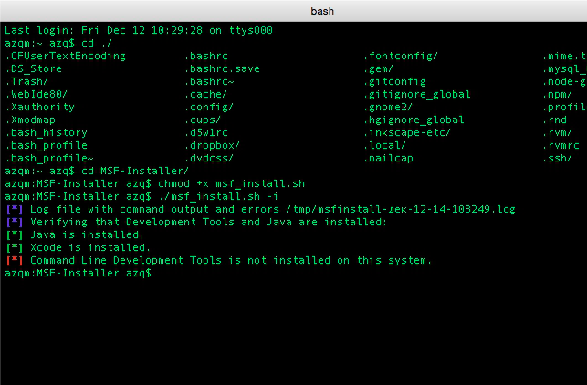

PyEnv на OS X - Менеджер версий для python
— azqО том как установить PyEnv и всё что для него нужно в OS X. PyEnv - это такая магическая штука которая позволяет иметь в системе несколько версий Python и легко переключаться между ними. Иногда даже автоматически)))
Установка.
С помощью уже привычного Homebrew устанавливаем необходимые пакеты.
brew install pyenv pyenv-virtualenv pyenv-virtualenvwrapper pyenv-ccache …Python3 и virtualenv в Sierra. Установка и настройка
— azqЭто обновлённый материал о настройке Python3 и virtualenv по мотивам двух предыдущих: "Настройка Python и Django в Mac" и "Virtualenv на Mac OS X". Всё описанное тут актуально для OS X Sierra. Если вам не понятен материал, задавайте вопросы в комментариях или же обратитесь к ссылкам выше.
Подготовка. Установка Homebrew …
Steam. Танцы с бубном и установка на Ubuntu.
— azqВсё началось с того, что мой друг, играющий в компьютерные игры, замучился с тормозами системы, вирусами и непонятно откуда взявшимися приложениями от mail.ru. Дружище как раз играл в Steam-игры. А к OC Windows у меня давно сложившееся негативное отношение...
Итак, задача: установить Steam на Linux.
Заход первый (совершенно неправильный …
Metasploit Framework. Установка на OS X. Старая версия
— azqСегодня устанавливаем Metasploit Framework.
В этом нам поможет скрипт проекта - https://github.com/darkoperator/MSF-Installer.git
git clone https://github.com/darkoperator/MSF-Installer.git
cd MSF-Installer/
chmod +x msf_install.sh
./msf_install.sh -i
У меня вылетело следующее:

решается просто:
xcode-select --install
после повторяем "./msf_install.sh -i"
Исправляем проблему запуска Apache(MAMP Pro) в Yosemite
— azqОпять купертиновцы намудрили))). На этот раз - не запускается apache из набора MAMP Pro в Yosemite.
Идём в папку /Applications/MAMP/Library/bin. Там находим файлик envvars и переименовываем его, например в _envvars
Не работает M-Audio ProFire 610 в Yosemite
— azqПопробовал я тут поставить Yosemite. Это уже вторая попытка заюзать новую систему. Первая оказалась неудачной т.к. система была, на тот момент, реально сырой. Сейчас всё более-менее. Но всё-же обнаружил одну проблему. У меня не работала звуковая карта - M-Audio ProFire 610.
Пробема, как всегда решилась просто:
sudo nvram boot-args="kext-dev-mode …Редирект с http на https для nginx
— azqКак-то встала задача - редирект с http на https. Задача решается просто, просто добавлением нескольких строк в директиву location / {}
if ( $scheme = "http" ) {
rewrite ^/(.*)$ https://$host/$1 permanent;
}
теперь при заходе на http://domain.com будет происходить редирект на https://domain.com
Меняем root-пароль MySQL в MAC OS X
— azqУстанавливал я как-то MySQL на OS X, и толи я запарил, толи одно из двух… но пароль который я вводил не подходил(((
Решаем проблему:
Сначала останавливаем службу:
sudo /Library/StartupItems/MySQLCOM/MySQLCOM stop
Далее выполняем:
/usr/local/mysql/bin/mysqld_safe --skip-grant-tables
А для старых версий MySQL:
/usr/local/mysql/bin …Удаляем Homebrew
— azqСлучилось так что нужно удалить Homebrew, окей. Решить задачу, как всегда, можно несколькими способами.
Первый способ. Для этого нужно выполнить в консоли:
cd `brew --prefix`
rm -rf Cellar
brew prune
rm `git ls-files`
rm -r Library/Homebrew Library/Aliases Library/Formula Library/Contributions
rm -rf .git
rm -rf ~/Library/Caches …Разбираем WD My Cloud
— azqУ нас две задачи - разобрать и не сломать пока разбираем. Буду делать это с уже пустой коробкой, т.к. не зачем лишний раз кантовать диск).
Делать это будем положив девайс на бок.
А в качестве инструмента подойдёт пластиковая карта. Таким образом в случае резкого движения мы не поцарапаем корпус или …